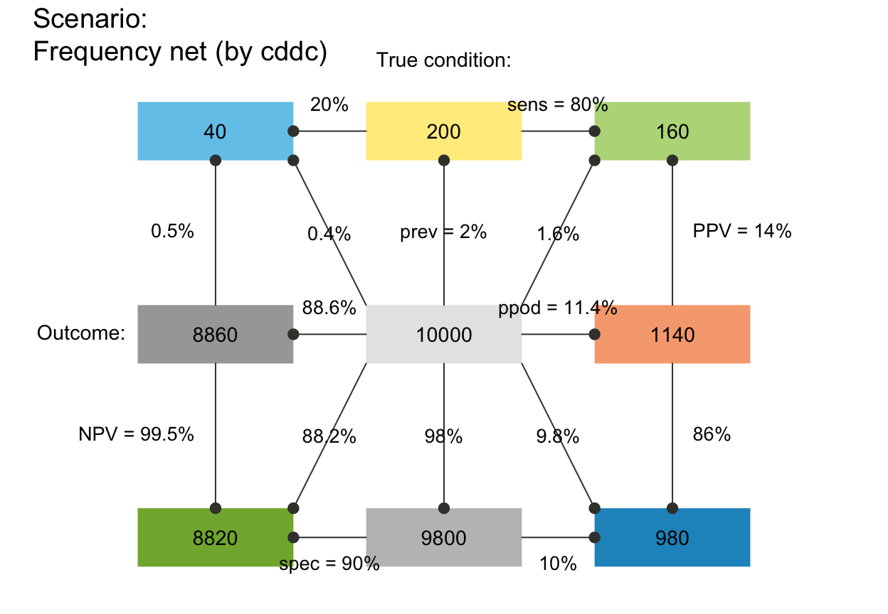
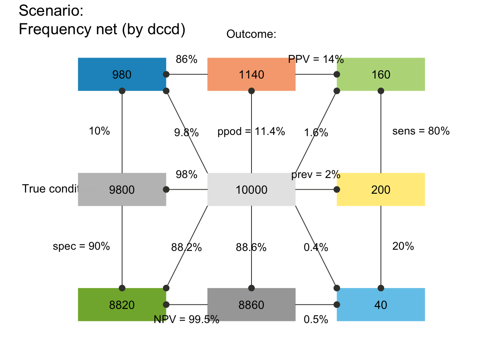
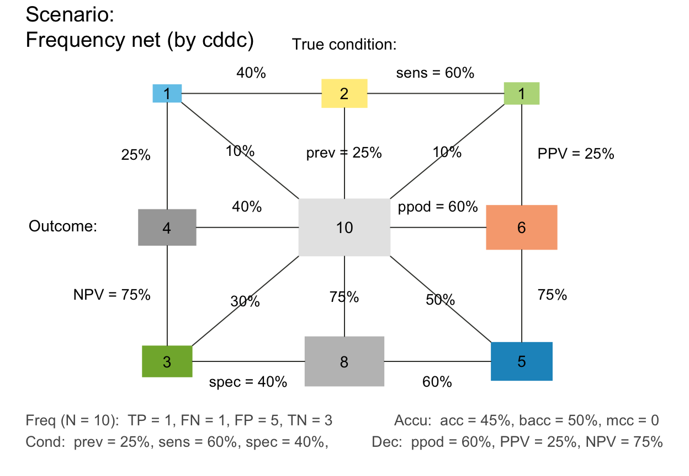
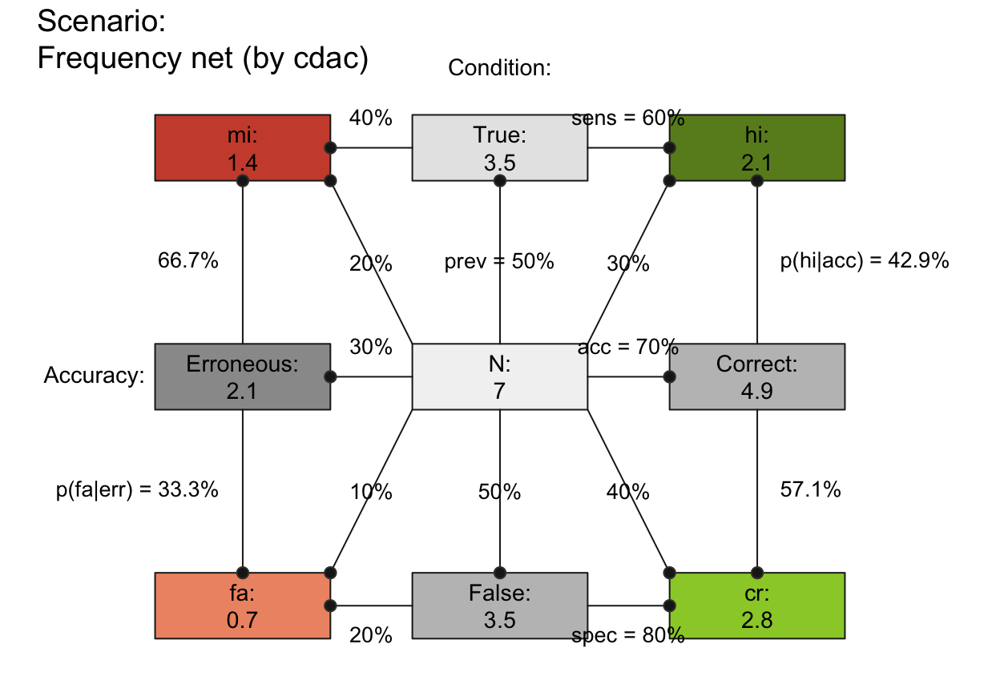
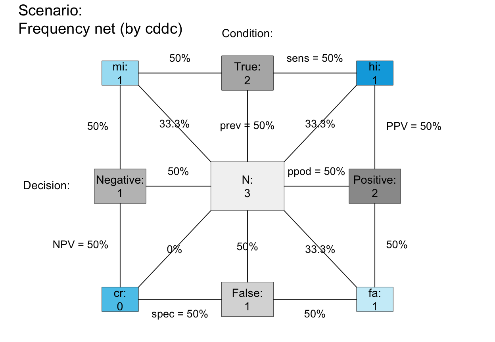
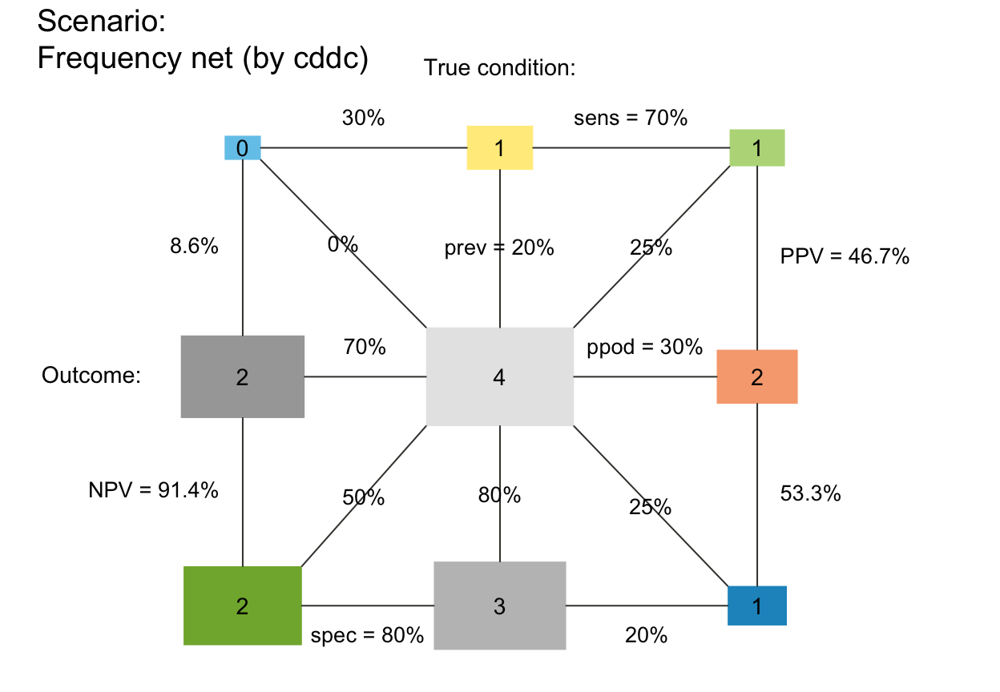
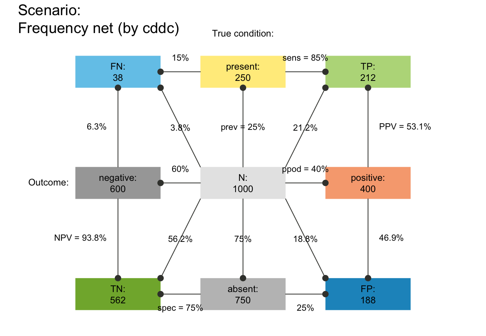
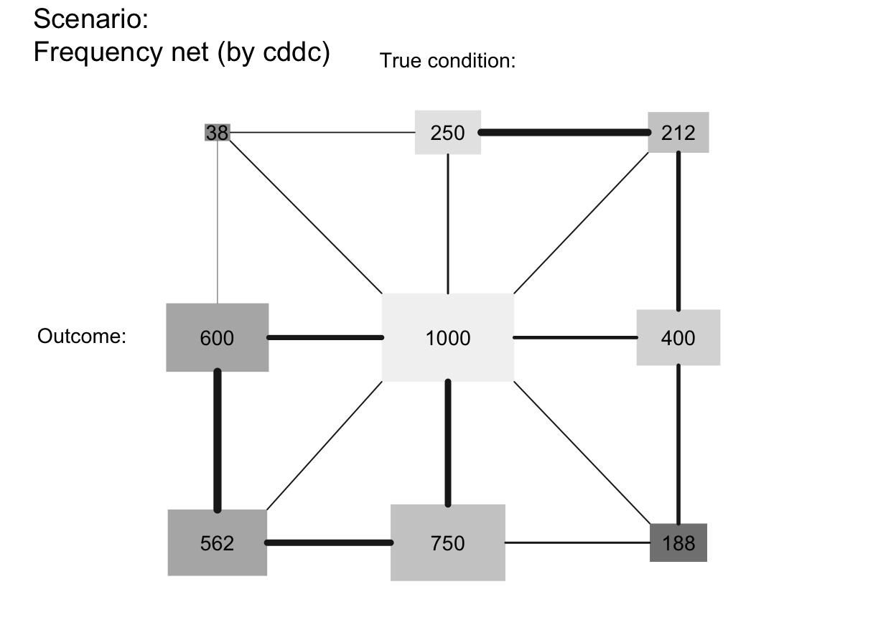
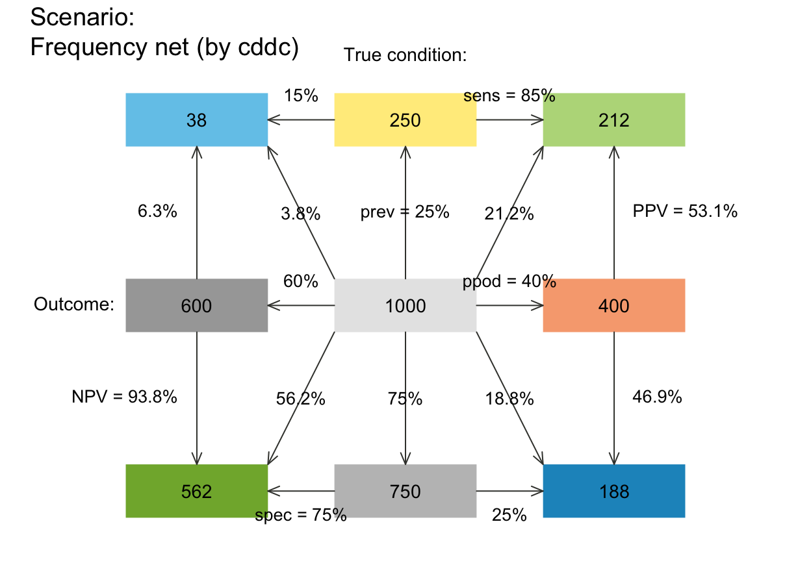
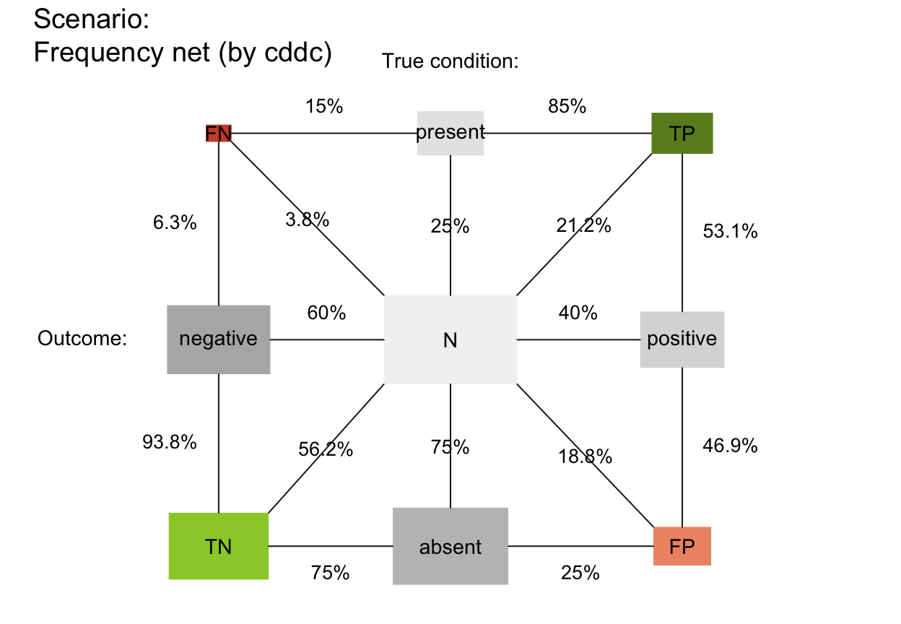

plot_fnet plots a frequency net of
from a sufficient and valid set of 3 essential probabilities
(prev, and
sens or its complement mirt, and
spec or its complement fart)
or existing frequency information freq
and a population size of N individuals.
plot_fnet( prev = num$prev, sens = num$sens, mirt = NA, spec = num$spec, fart = NA, N = num$N, by = "cddc", area = "no", scale = "p", round = TRUE, f_lbl = "num", f_lbl_sep = NA, f_lwd = 0, p_lwd = 1, p_scale = FALSE, p_lbl = "mix", arr_c = NA, joint_p = TRUE, lbl_txt = txt, title_lbl = txt$scen_lbl, cex_lbl = 0.9, cex_p_lbl = NA, col_pal = pal, mar_notes = FALSE, ... )
Arguments
| prev | The condition's prevalence |
|---|---|
| sens | The decision's sensitivity |
| mirt | The decision's miss rate |
| spec | The decision's specificity value |
| fart | The decision's false alarm rate |
| N | The number of individuals in the population.
A suitable value of |
| by | A character code specifying 1 or 2 perspective(s) that split(s) the population into 2 subsets. Specifying 1 perspective plots a frequency tree (single tree) with 3 options:
Specifying 2 perspectives plots a frequency prism (double tree) with 6 options:
|
| area | A character code specifying the shapes of the frequency boxes, with 2 options:
|
| scale | Scale probabilities and corresponding area dimensions either by exact probability or by (rounded or non-rounded) frequency, with 2 options:
Note: |
| round | Boolean option specifying whether computed frequencies
are rounded to integers. Default: |
| f_lbl | Type of label for showing frequency values in 4 main areas, with 6 options:
|
| f_lbl_sep | Label separator for main frequencies
(used for |
| f_lwd | Line width of areas.
Default: |
| p_lwd | Line width of probability links.
Default: |
| p_scale | Boolean option for scaling current widths of probability links
(as set by |
| p_lbl | Type of label for showing probability links and values, with many options:
|
| arr_c | Arrow code for symbols at ends of probability links
(as a numeric value
Default: |
| joint_p | Boolean options for showing links to joint probabilities
(i.e., diagonals from N in center to joint frequencies in 4 corners).
Default: |
| lbl_txt | Default label set for text elements.
Default: |
| title_lbl | Text label for current plot title.
Default: |
| cex_lbl | Scaling factor for text labels (frequencies and headers).
Default: |
| cex_p_lbl | Scaling factor for text labels (probabilities).
Default: |
| col_pal | Color palette.
Default: |
| mar_notes | Boolean option for showing margin notes.
Default: |
| ... | Other (graphical) parameters. |
Source
Binder, K., Krauss, S., and Wiesner, P. (2020). A new visualization for probabilistic situations containing two binary events: The frequency net. Frontiers in Psychology, 11, 750. doi: 10.3389/fpsyg.2020.00750
Value
Nothing (NULL).
Details
plot_fnet shows frequencies as nodes and probabilities as links
(like trees and double trees generated by plot_prism),
but combines elements from 2x2 tables (see plot_tab)
and tree diagrams.
Similar to other 2D-visualizations (e.g., ,
plot_area, plot_prism and
plot_tab), the
frequency net selects and combines two perspectives
(e.g., by = "cddc").
However, the frequency net is similar to a 2x2 table insofar as
its perspectives (shown by arranging marginal frequencies in a
vertical vs. horizontal fashion) do not suggest an order
or dependency (in contrast to trees or mosaic plots).
Additionally, the frequency net allows showing
3 kinds of (marginal, conditional, and joint) probabilities.
See the article by Binder K, Krauss S and Wiesner P (2020). A new visualization for probabilistic situations containing two binary events: The frequency net. Frontiers in Psychology, 11, 750. doi: 10.3389/fpsyg.2020.00750 for analysis and details.
See also
plot_prism for plotting prism plot (double tree);
plot_area for plotting mosaic plot (scaling area dimensions);
plot_bar for plotting frequencies as vertical bars;
plot_tab for plotting table (without scaling area dimensions);
pal contains current color settings;
txt contains current text settings.
Other visualization functions:
plot.riskyr(),
plot_area(),
plot_bar(),
plot_curve(),
plot_icons(),
plot_mosaic(),
plot_plane(),
plot_prism(),
plot_tab(),
plot_tree()
Examples
# (1) Basics: ---- # A. Using global prob and freq values: plot_fnet() # default frequency net, same as:# plot_fnet(by = "cddc", area = "no", scale = "p", # f_lbl = "num", f_lwd = 0, cex_lbl = .90, # p_lbl = "mix", arr_c = -2, cex_p_lbl = NA) # B. Providing values: plot_fnet(N = 10000, prev = .02, sens = .8, spec = .9) # Binder et al. (2020, Fig. 3)# Variants: plot_fnet(N = 10000, prev = .02, sens = .8, spec = .9, by = "cdac")plot_fnet(N = 10000, prev = .02, sens = .8, spec = .9, by = "dccd")# plot_fnet(N = 10000, prev = .02, sens = .8, spec = .9, by = "dcac") # plot_fnet(N = 10000, prev = .02, sens = .8, spec = .9, by = "accd") # plot_fnet(N = 10000, prev = .02, sens = .8, spec = .9, by = "acdc") # Trees (only 1 dimension): plot_fnet(N = 10000, prev = .02, sens = .8, spec = .9, by = "cd")# plot_fnet(N = 10000, prev = .02, sens = .8, spec = .9, by = "dc") # plot_fnet(N = 10000, prev = .02, sens = .8, spec = .9, by = "ac") # Area and margin notes: plot_fnet(N = 10, prev = 1/4, sens = 3/5, spec = 2/5, area = "sq", mar_notes = TRUE)# (2) Use case (highlight horizontal vs. vertical perspectives: ---- # Define scenario: mammo <- riskyr(N = 10000, prev = .01, sens = .80, fart = .096, scen_lbl = "Mammography screening", N_lbl = "Women", cond_lbl = "Breast cancer", dec_lbl = "Test result", cond_true_lbl = "Cancer (C+)", cond_false_lbl = "no Cancer (C-)", dec_pos_lbl = "positive (T+)", dec_neg_lbl = "negative (T-)", hi_lbl = "C+ and T+", mi_lbl = "C+ and T-", fa_lbl = "C- and T+", cr_lbl = "C- and T-") # Colors: my_non <- "grey95" my_red <- "orange1" my_blu <- "skyblue1" # A. Emphasize condition perspective (rows): my_col_1 <- init_pal(N_col = my_non, cond_true_col = my_blu, cond_false_col = my_red, dec_pos_col = my_non, dec_neg_col = my_non, hi_col = my_blu, mi_col = my_blu, fa_col = my_red, cr_col = my_red) plot(mammo, type = "fnet", col_pal = my_col_1, f_lbl = "namnum", f_lwd = 2, p_lbl = "no", arr_c = 0)# B. Emphasize decision perspective (columns): my_col_2 <- init_pal(N_col = my_non, cond_true_col = my_non, cond_false_col = my_non, dec_pos_col = my_red, dec_neg_col = my_blu, hi_col = my_red, mi_col = my_blu, fa_col = my_red, cr_col = my_blu) plot(mammo, type = "fnet", col_pal = my_col_2, f_lbl = "namnum", f_lwd = 2, p_lbl = "no", arr_c = 0)# (3) Custom color and text settings: ---- plot_fnet(col_pal = pal_bw, f_lwd = .5, p_lwd = .5, lty = 2, # custom fbox color, prob links, font = 3, cex_p_lbl = .75) # and text labelsplot_fnet(N = 7, prev = 1/2, sens = 3/5, spec = 4/5, round = FALSE, by = "cdac", lbl_txt = txt_org, f_lbl = "namnum", f_lbl_sep = ":\n", f_lwd = 1, col_pal = pal_rgb) # custom colors# plot_fnet(N = 5, prev = 1/2, sens = .8, spec = .5, scale = "p", # Note scale! # by = "cddc", area = "hr", col_pal = pal_bw, f_lwd = 1) # custom colors plot_fnet(N = 3, prev = .50, sens = .50, spec = .50, scale = "p", # Note scale! area = "sq", lbl_txt = txt_org, f_lbl = "namnum", f_lbl_sep = ":\n", # custom text col_pal = pal_kn, f_lwd = .5) # custom colors# (4) Other options: ---- plot_fnet(N = 4, prev = .2, sens = .7, spec = .8, area = "sq", scale = "p") # areas scaled by prob (matters for small N)# plot_fnet(N = 4, prev = .2, sens = .7, spec = .8, # area = "sq", scale = "f") # areas scaled by (rounded or non-rounded) freq ## Frequency boxes (f_lbl): # plot_fnet(f_lbl = NA) # no freq labels # plot_fnet(f_lbl = "abb") # abbreviated freq names (variable names) plot_fnet(f_lbl = "nam") # only freq namesplot_fnet(f_lbl = "num") # only numeric freq values (default)# plot_fnet(f_lbl = "namnum") # names and numeric freq values plot_fnet(f_lbl = "namnum", cex_lbl = .75) # smaller freq labels# plot_fnet(f_lbl = "def") # informative default: short name and numeric value (abb = num) # f_lwd: # plot_fnet(f_lwd = 1) # basic lines # plot_fnet(f_lwd = 0) # no lines (default), set to tiny_lwd = .001, lty = 0 (same if NA/NULL) # plot_fnet(f_lwd = .5) # thinner lines plot_fnet(f_lwd = 3) # thicker lines## Probability links (p_lbl, p_lwd, p_scale): # plot_fnet(p_lbl = NA) # no prob labels (NA/NULL/"none") plot_fnet(p_lbl = "mix") # abbreviated names with numeric values (abb = num)# plot_fnet(p_lbl = "min") # minimal names (of key probabilities) # plot_fnet(p_lbl = "nam") # only prob names plot_fnet(p_lbl = "num") # only numeric prob values# plot_fnet(p_lbl = "namnum") # names and numeric prob values plot_fnet(p_lwd = 6, p_scale = TRUE)plot_fnet(area = "sq", f_lbl = "num", p_lbl = NA, col_pal = pal_bw, p_lwd = 6, p_scale = TRUE)# arr_c: # plot_fnet(arr_c = 0) # acc_c = 0: no arrows # plot_fnet(arr_c = -3) # arr_c = -1 to -3: points at both ends # plot_fnet(arr_c = -2) # point at far end plot_fnet(arr_c = +2) # crr_c = 1-3: V-shape arrows at far endplot_fnet(by = "cd", joint_p = FALSE) # tree without joint probability links# plot_fnet(by = "cddc", joint_p = FALSE) # fnet ... ## Plain plot versions: plot_fnet(area = "no", f_lbl = "def", p_lbl = "num", col_pal = pal_mod, f_lwd = 1, title_lbl = "", mar_notes = FALSE) # remove titles and margin notesplot_fnet(area = "no", f_lbl = "nam", p_lbl = "min", col_pal = pal_rgb)plot_fnet(area = "sq", f_lbl = "nam", p_lbl = "num", col_pal = pal_rgb)# plot_fnet(area = "sq", f_lbl = "def", f_lbl_sep = ":\n", p_lbl = NA, f_lwd = 1, col_pal = pal_kn) ## Suggested combinations: # plot_fnet(f_lbl = "nam", p_lbl = "mix") # basic plot plot_fnet(f_lbl = "namnum", p_lbl = "num", cex_lbl = .80, cex_p_lbl = .75)# plot_fnet(area = "no", f_lbl = "def", p_lbl = "abb", # def/abb labels # f_lwd = .8, p_lwd = .8, lty = 2, col_pal = pal_bwp) # black-&-white # plot_fnet(area = "sq", f_lbl = "nam", p_lbl = "abb", lbl_txt = txt_TF, col_pal = pal_bw) plot_fnet(area = "sq", f_lbl = "num", p_lbl = "num", f_lwd = 1, col_pal = pal_rgb)plot_fnet(area = "sq", f_lbl = "nam", p_lbl = "num", f_lwd = .5, col_pal = pal_rgb)